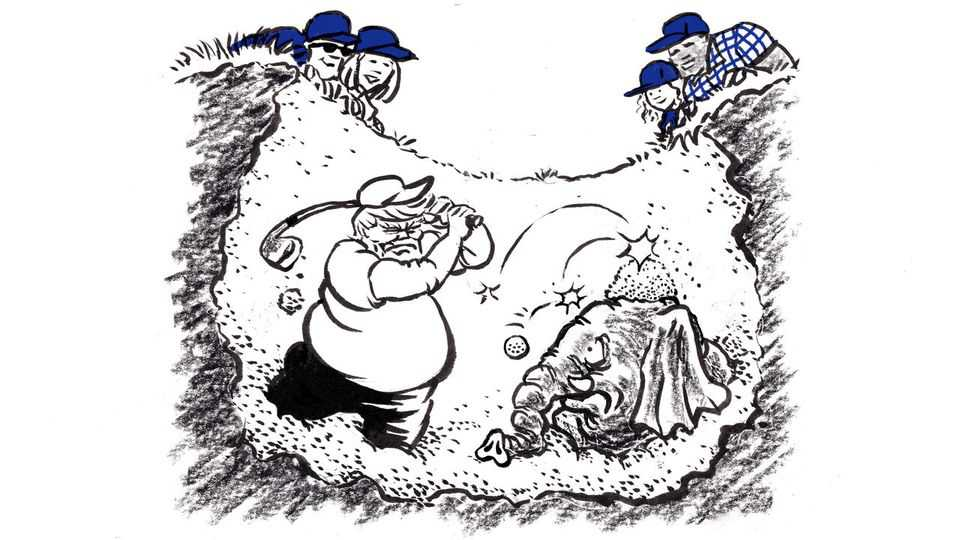

Republicans need to learn the Democrats’ bitter lesson of 2022
Even if they beat expectations in the midterms, their standard-bearer is an obstacle to their future

Oct 15th 2026
The news rushes ahead so swiftly now that even recent events can vanish in the rear-view mirror, to be recalled dimly, if at all. But cast your mind back, if you can, to four years ago. In mid-October 2022 petrol prices were nearing $4 a gallon, and 30-year mortgage rates were spiking to 7%. Only one in five Americans thought the country was heading in the right direction, and the approval ratings of the president, Joe Biden, were dismal. Analysts noted that Democrats were struggling to defend seats in districts Mr Biden had won by double digits in such reliably Democratic states as California and New York. Not just a red wave but a “red tsunami” was coming, crowed Senator Ted Cruz of Texas. “Tomorrow, its immense swell will make landfall,” the American Conservative, a right-wing publication, predicted on election eve.
The immense swell, it turned out, was in the advance hype. The Republicans won a majority in the House, but it was the Democrats who emerged elated. They had confounded expectations and overcome the historical pattern of midterm elections by losing a net of only nine seats in the House and gaining one in the Senate, where they held the majority. That outcome should be a caution to Democrats now, as they grow giddy at the hope of their own tsunami next month. But the real lesson is for Republicans: what seemed like happy news for the Democrats in 2022 turned out to be a disaster for them.
When Mr Biden held a press conference the day after the midterms to celebrate what he called “a strong night” for Democrats, he was asked what he would now do differently. “Nothing,” he replied. Americans, he explained, were just learning to appreciate the great achievements of his administration. “The more they know about what we’re doing, the more support there is,” he said. After the midterms, aides who had privately wondered whether Mr Biden should run for a second term cast their doubts aside, and other party leaders publicly fell into line behind him. At that press conference, Mr Biden declared that the outcome of the midterms meant the MAGA Republicans were “not taking over the government again”. Two years later they did just that.
Do the Democrats have a bigger advantage in 2026 than the Republicans did in 2022? Probably. In 2022 Republican candidates had to contend with anger at the Supreme Court’s Dobbs decision, handed down in June that year, which eliminated a constitutional right to abortion. That energised not only reliable Democratic voters but also a constituency that had drifted away from the party—white women without college degrees. At the same time, though Democrats, then the party in power, were competitive financially in 2022, Republicans have extracted an extraordinary advantage during this election cycle. Further, Donald Trump’s push to gerrymander more districts ahead of this election may have added about eight seats to the Republicans’ total.
The biggest difference in 2026 that favours the Democrats is passion. In 2022 voters who described themselves as “extremely motivated” to go to the polls were evenly divided between the parties, according to polling by the Pew Research Centre. In 2026, according to Pew, 59% of such fired-up voters favour the Democrats, while only 35% favour Republicans.
Whence this motivation gap? Everyone knows the answer, but Republicans are scared to admit it. Voters are not inspired by a coherent Democratic legislative agenda. In contrast to 1994, when Republicans united around Newt Gingrich’s “Contract with America” to win a thumping victory in the House, and to 2006, when Democrats campaigned on a six-point plan they called “Six for ’06”, no one in this cycle could hope to distil the aims of the opposition party on a notecard. Nor can it be said that even Democrats—let alone the wider public—are thrilled with the party. Only 48% of Democratic voters approve of the job their party is doing now in Congress, according to a poll last month by Quinnipiac University. Among all registered voters, that proportion is 21%.
What Democratic candidates have going for them is, simply, rejection of the Trump presidency. Every midterm election is a referendum on the sitting president, but that appears to be truer this year than ever. Fully 44% of registered voters view their vote for congressional representatives as a vote to oppose him; only 19% want to signal support for him. The election-forecast model devised by The Economist gives the Democrats an astonishing three-in-five chance of winning the Senate, and a 19-in-20 chance of winning the House. But gerrymandering and polarisation make it far harder for a party to achieve the kind of whopping gains Republicans made as recently as 2010, when they netted 64 seats. The Cook Political Report, a sober prognosticator of elections, estimates the Democrats will gain between nine House seats—the same number as the Republicans netted in 2022—and 19 seats.
When Republicans lose, Mr Trump looks for someone else to blame. “If they win, I should get all the credit,” he said of his endorsed candidates in 2022. “And if they lose, I should not be blamed at all.” In 2026 he should get the blame whether Republicans take a shellacking or, by beating the expectations game, eke out the phoney validation Mr Biden claimed four years ago. Mr Trump put his party in a hole by promoting candidates in states such as Texas and South Carolina based on loyalty to him rather than skill and appeal. More important, he has made lousy choices in office that have made him historically unpopular. Yet even more than Mr Biden, this president can be counted on to keep governing as he has, regardless of the midterm result. He cannot run again. But those Republicans who hope to succeed him as president in 2029 should learn from the Democrats’ mistakes and begin, politely but decisively, to distance themselves from him. ■